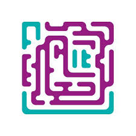
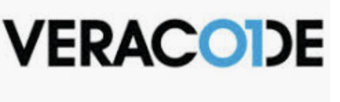
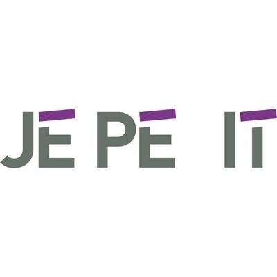

Professies
YourSurprise

YourSuprise is een cadeau webshop die aangepaste persoonlijke cadeaus maakt.
Ze doen dit vanuit hun locatie in Zierikzee,
Het grootste doel van het bedrijf is natuurlijk cadeaus verkopen, maar er is natuurlijk meer gaande behind the scenes.
IT is van groot belang erbij en de software die ze gebruiken voor hun bedrijf, is zelf gemaakt.
van inventory management tot de website.
Er is geen specifieke functie bij yoursurprise, je krijgt veel variatie aangeboden over wat je kan en mag doen.
Source
Macaw

Macaw is een data-analyse bedrijf, die waarde hecht aan design en technische oplossingen.
Het motto van Macaw, "Challenge accepted", zegt veel over het bedrijf.
Opdrachten en projecten zijn voor hun uitdagingen en gaan daarom altijd voor de beste oplossing.
Een ander sterk punt van het bedrijf is hun verband met microsoft,
daardoor krijgen zij als eerst de pre-release van software, waardoor ze een voordeel hebben op de competitie.
Ze hebben een breed scala aan functies, maar als je er werkt krijg je een specifieke titel en verdiepte functie.
Source
Labyrinth-IT

Labyrinth-IT is een managementbedrijf met een IT-specialisatie.
ze verdiepen zich in jouw bedrijf zijn management en software, en kijken of er dingen beter kunnen.
Zij bieden services aan zoals: IT-beheer, IT-security, cloud-service
Source
Veracode

Veracode is IT beveiligingsbedrijf.
Ze testen applicaties en webservices op beveiligings-fouten, ook met hun eigen software.
Zij gebruiken een zogenoemde "hacker mindset", wat betekent dat ze van elke software willen weten hoe het is gemaakt en waar het uit bestaat.
Deze wijze(en functie van het bedrijf) zorgt ervoor dat waar ze mee werken, altijd verandert.
Source
JéPé IT

JéPé IT is een bedrijf dat zich specialiseert in het verkopen, onderhouden, reparatie en advies van onder andere; computers, laptops, netwerken en servers.
Ze werken met een klein team van professionals met als belangrijkste doel klantvriendelijkheid en duidelijkheid.
Voor elk probleem die hun klanten opleveren proberen ze de perfecte technische oplossingen te vinden.
Source